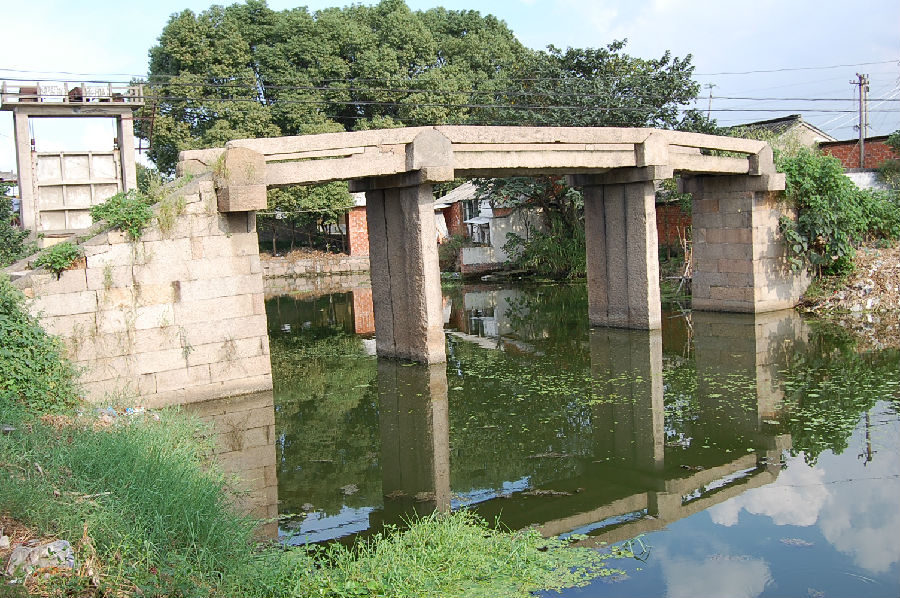

嘉兴市文物保护网 · 市级文物保护点 · 2020-11-06 · 原文

张家塔福德桥位于嘉兴市秀洲区新塍镇桃园村张家塔，桃园小学旁边。据周围村民介绍为民国时期建造。南北横跨河港，系三孔有栏梁式石板桥，全长21.7米，宽1.95米，桥面和桥柱均由3块石板组成，有桥栏，无望柱。桥底距水面高度3.1米，南北落坡各设石阶12级。东西两侧桥联为“渡尽众生福禄广结，流传千载德量深沉。一蒿春日虹腰涨，千亩秋风雁齿高。”另，桥柱上刻字“朱光荣助洋二百元，刘氏助洋一百元，严倪氏助北墩，金塍氏助南墩，雷陀桥助天罡石四块，桥柱石一块，南浔庞家捐赠桥耳朵石四块。”福德桥形制完整，造型美观，做工考究，桥身文字保存完整，历史信息丰富，具有较高的历史和艺术价值。2010年公布为嘉兴市文物保护点。